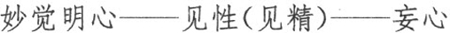
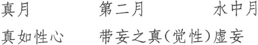
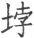
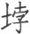

还尘，清明还霁”，即是著名的“八还辨见”；而第六番之“见吾不见”、第十番之“见见之时，见非是见，见犹离见，见不能及”，特别为禅宗所重视，成为了著名的禅宗公案而被参究。
还尘，清明还霁”，即是著名的“八还辨见”；而第六番之“见吾不见”、第十番之“见见之时，见非是见，见犹离见，见不能及”，特别为禅宗所重视，成为了著名的禅宗公案而被参究。卷二接“十番显见”之“三～十”：三显见不灭；四显见不失；五显见无还；六显见不杂；七显见无碍；八显见不分；九显见超情；十显见离见。“十番显见”的辨析过程细腻缜密，层层深入，极其精彩。明代交光法师《楞严经正脉疏》评论说：“初番显其脱根、脱尘，迥然灵光独耀；二番显其离身、离境，凝然本不动摇；三番显其尽未来际，究竟常住不灭；四番显其从无始来，虽颠倒而不失；五番显其无往无还，挺物表而常住；六番显其不杂不乱，超象外以孤标；七番显其观大观小，转物自在无碍；八番显其无是无非，见真妄情自息；九番显其诸情不堕，远越外计、权宗；十番显其自相亦离，转入纯真无妄。显见至此，可谓显之至矣！”其中第五番的“明还日轮，……暗还黑月，通还户牖，壅还墙宇，缘还分别，顽虚还空，郁
还尘，清明还霁”，即是著名的“八还辨见”；而第六番之“见吾不见”、第十番之“见见之时，见非是见，见犹离见，见不能及”，特别为禅宗所重视，成为了著名的禅宗公案而被参究。
“十番显见”以常情中眼根之“见性”（又称“见精”）为出发点来辨析，最终抉择胜义中的妙明真心正见，这其中以“三种月”比喻见地抉择中的三种见，对于理解禅宗“指月”的参究理路极为有益。如下图：


“十番显见”之后，接着讲述了众生世界的两种业缘：“别业妄见”和“同分妄见”。
“十番显见”起初于动静中抉择静性，于生灭中抉择不生灭性，于颠倒中抉择不变性，进而于“三种月”中抉择真月，从而揭示真性绝待，无有一切大小、是非等差别相，妙明真心与一切山河大地之不一不异、即相离相，最后过渡到抉择妙明真心之非因非缘、非自然性，非和合生及不和合，从而引出正见抉择中的另外一个重要论题：五阴、六入、十二处、十八界等一切有为法诸幻化相，“因缘和合，虚妄有生，因缘别离，虚妄名灭”，本来皆是如来藏妙真如性。本卷讨论了“五阴本如来藏妙真如性”。
尔时，阿难及诸大众，闻佛示诲，身心泰然，念无始来失却本心，妄认缘尘分别影事，今日开悟，如失乳儿，忽遇慈母。合掌礼佛，愿闻如来显出身心真妄虚实，现前生灭与不生灭二发明性。
译文：
这时，阿难及与会大众听了佛的开示教诲，身心泰然，回想自己从无始以来迷失了本具的妙明真心，妄认所缘六尘境而产生种种虚妄分别尘影之事为真实，今日蒙佛教诲，始得开悟，就像一时失乳的幼儿忽然遇到了慈母一般。大家合掌礼佛，诚愿听闻如来进一步开显出身心的真与妄、虚与实，以及现前身心的生灭与不生灭，由此二者开发显明身心中什么是虚妄生灭的无常性，什么是真实不生灭的真常性。
时波斯匿王起立白佛：“我昔未承诸佛诲敕，见迦旃延、毗罗胝子 (1) ，咸言‘此身死后断灭，名为涅槃’。我虽值佛，今犹狐疑：云何发挥证知此心不生灭地？今此大众诸有漏者，咸皆愿闻。”佛告大王：“汝身现在 (2) ，今复问汝：汝此肉身为同金刚常住不朽？为复变坏？”“世尊！我今此身终从变灭。”佛言：“大王！汝未曾灭，云何知灭？”“世尊！我此无常变坏之身虽未曾灭，我观现前，念念迁谢，新新不住，如火成灰，渐渐销殒 (3) 。殒亡不息，决知此身，当从灭尽。”佛言：“如是，大王！汝今生龄已从衰老，颜貌何如童子之时？”“世尊！我昔孩孺 (4) ，肤腠润泽 (5) ；年至长成，血气充满；而今颓龄，迫于衰耄 (6) ，形色枯悴，精神昏昧，发白面皱，逮将不久，如何见比充盛之时！”
注释：
(1) 迦旃延：意为“剪发”，印度外道六师之一，主张一切皆是自在天所造。毗罗胝（zhī）子：意为“不作”，披发灰身的苦行外道，外道六师之一，主张苦乐等报，现在无因，未来无果。
(2) 在：有版本作“存”。
(3) 殒（yǔn）：损毁，死亡。
(4) 孺（rú）：幼儿。
(5) 腠：肌肉之纹理。
(6) 耄（mào）：年七十曰耄。
译文：
这时波斯匿王站起来对佛说：“我过去没有接受佛陀教诲的时候，曾见外道论师迦旃延和毗罗胝子等，都说‘我们这个身体死后即断灭坏尽，称之为涅槃’。我现在虽然有幸听闻佛陀说法，但心中仍有疑问：究竟如何发挥佛所说的道理而证知此心的不生不灭常住真性境地？现在与会大众，那些还未断尽烦恼的有漏学人，都希望聆听世尊您的教诲。”佛告诉国王说：“你现今身体健在，我且问你：你这个肉身，是同金刚一样常存不朽呢？还是要日渐变坏？”波斯匿王回答说：“世尊！我现在这个身体，终归是要变坏散灭的。”佛说：“大王！你现在还未坏灭，怎么知道日后终将变坏散灭呢？”波斯匿王说：“世尊！我这个无常而随时变坏的身体，虽然现在还未坏灭，但我观察现前这个身体，念念迁流，新新不住，如同火灭成灰，渐渐消亡。这个坏灭消亡的过程从不停息，因此我决定了知此身将会坏死灭尽。”佛说：“是的，大王！你现在的年龄已走向衰老，你的面容形貌与童年时候相比如何？”波斯匿王答道：“世尊！我孩童之时，肌肤细嫩润泽；及至成年，血气充满；而今到了衰颓的年龄，迫近衰老，形貌和肤色都已枯槁憔悴，精神昏昧，发白面皱，恐将不久于人世了，如何能与壮盛之年相比！”
佛言：“大王，汝之形容应不顿朽？”王言：“世尊！变化密移，我诚不觉，寒暑迁流，渐至于此。何以故？我年二十，虽号年少，颜貌已老初十岁时；三十之年又衰二十；于今六十又过于二，观五十时，宛然强壮。世尊，我见密移，虽此殂落 (1) ，其间流易，且限十年。若复令我微细思惟，其变宁唯一纪、二纪 (2) ，实为年变；岂唯年变，亦兼月化；何直月化，兼又日迁。沉思谛观，刹那刹那 (3) ，念念之间，不得停住。故知我身终从变灭。”
注释：
(1) 殂（cú）落：凋零。
(2) 一纪：古代以十二年为一纪。
(3) 刹那：须臾，念顷，时之最少者，即一个心念起动之间。
译文：
佛说：“大王，你的形体容貌，应该不是突然衰老的吧？”波斯匿王答道：“世尊！这变化微密潜移，我实在不曾觉察到，随着岁月寒来暑往的流迁，渐渐到了今天这个老衰之相。为什么呢？当我二十岁时，虽说是年少，但容颜相貌已老成于十岁时；三十岁时又老成于二十岁时；现在我已六十二岁了，回看五十岁时，身体还是很强壮。世尊，我见身体随岁月暗自迁移，虽已日趋衰老，其间的迁流变易，权且以十年为限来观察即见明显变化。如果我再细细思维观察，则其变化岂止是十年二十年一变，实则是每年都在变；岂止是每年在变，而且每月都在变化；岂止是每月在变化，又有每日的变迁。进一步深入思维，如实观察，实在是刹那刹那、念念之间都在变化，没有一时一刻停住不变。所以可以知道，我这个身体终归是要变坏散灭的。”
佛告大王：“汝见变化，迁改不停，悟知汝灭；亦于灭时，汝知身中有不灭耶 (1) ？”波斯匿王合掌白佛：“我实不知。”佛言：“我今示汝不生灭性。大王，汝年几时见恒河水？”王言：“我生三岁，慈母携我谒耆婆天 (2) ，经过此流，尔时即知是恒河水。”佛言：“大王，如汝所说，二十之时衰于十岁，乃至六十，日月岁时，念念迁变，则汝三岁见此河时，至年十三，其水云何？”王言：“如三岁时，宛然无异；乃至于今，年六十二，亦无有异。”佛言：“汝今自伤发白面皱，其面必定皱于童年；则汝今时观此恒河，与昔童时观河之见，有童耄不？”王言：“不也，世尊！”佛言：“大王，汝面虽皱，而此见精 (3) ，性未曾皱。皱者为变，不皱非变；变者受灭，彼不变者元无生灭，云何于中受汝生死？而犹引彼末伽梨等 (4) ，都言此身死后全灭！”王闻是言，信知身后舍生趣生，与诸大众踊跃欢喜，得未曾有。
注释：
(1) 汝知：有版本作“知汝”。
(2) 耆（qí）婆天：意为“命天”，即长寿天。此天为帝释天左右之侍卫。西域诸国风俗，皆事长命天神，子生三岁，即谒此天之庙，以求长命百岁。
(3) 见精：即见性，眼根能见之精妙觉性。
(4) 末伽梨：古印度六师外道之一，主张众生的苦乐不由因缘，自然产生，死后一切皆灭。
译文：
佛告诉波斯匿王：“你看到了身体变化，变迁不停，因而悟知你的身体终将坏灭；但在你身体变化坏灭的同时，你是否知道身中还有不灭的东西存在吗？”波斯匿王合掌禀告佛说：“我实不知。”佛说：“我现在为你抉择显示生灭身中的不生灭性。大王，你多大年龄时看见恒河水？”波斯匿王说：“我三岁时，母亲带我去拜谒耆婆天，经过恒河，那时就知道了恒河水。”佛说：“大王，如你所说，二十岁时比十岁要衰老些，乃至到六十岁，其间的每年每月每日每时，身体都在念念流迁变化着；但是，你在三岁时见到的恒河水，与你十三岁又见到的恒河水，二者有什么不同吗？”波斯匿王答道：“与三岁时见到的全然无异；甚至到今天我六十二岁时所见到的恒河水，也没有什么不同。”佛说：“你现在感伤自己发白面皱，面容当然比童年时更皱一些了；但是，你现在看见恒河，与童年时看见恒河，这个‘见性’也有老幼变化的区别吗？”波斯匿王说：“没有区别，世尊！”佛说：“大王，你的面容虽然变皱，但这个‘见精’，其本性却未曾有过起皱变化。能皱的属于变化，不皱的属于不变；变化的终将坏灭，而那个不变的本来就属于不生灭性，怎么会在身中随着你身体的生死而生灭呢？而你却还引用外道末伽梨他们的说法，说什么这个身体死后全都消灭不存了呢！”波斯匿王听了佛陀的这番开示后，才确然知道这个身体死后，虽舍此生，仍趣他生，并非全然断灭；因此和诸大众都欢喜踊跃，得到从未曾有的法喜。
阿难即从座起，礼佛合掌，长跪白佛：“世尊，若此见闻必不生灭，云何世尊名我等辈遗失真性，颠倒行事？愿兴慈悲，洗我尘垢。”即时如来垂金色臂，轮手下指，示阿难言：“汝今见我母陀罗手 (1) ，为正？为倒？”阿难言：“世间众生以此为倒，而我不知谁正谁倒。”佛告阿难：“若世间人以此为倒，即世间人将何为正？”阿难言：“如来竖臂，兜罗绵手上指于空，则名为正。”佛即竖臂，告阿难言：“若此颠倒，首尾相换，诸世间人一倍瞻视；则知汝身与诸如来清净法身，比类发明，如来之身名正遍知 (2) ，汝等之身号性颠倒。随汝谛观，汝身佛身称颠倒者，名字何处号为颠倒？”
注释：
(1) 母陀罗手：意译为“印相”、“契印”，即结印之手。
(2) 正遍知：音译作“三藐三普提”，佛十号之一。新译为“正等觉”、“正等正觉”。
译文：
这时，阿难即从座起，合掌礼佛，长跪对佛说：“世尊，如果见性是不生不灭的，那世尊为什么呵斥我等遗失真性，颠倒行事？愿佛大兴慈悲，以甘露法水洗涤我等的心头尘垢。”这时如来垂下金色手臂，五轮手指向地面，对阿难说：“你现在看我的结印之手，是正还是倒？”阿难答道：“世间众生都以此为倒，但我不知道何者为正，如何为倒？”佛告诉阿难：“如果世间人以此为倒，那世间人认为怎样才是正呢？”阿难说：“如果如来竖起手臂，把手向上指向天空，世间人则称此为正。”佛随即竖起手臂，告诉阿难说：“若把手臂上下颠倒一下，不过是首尾相换而已，本无所谓正倒，而世间人却执着这样为正，那样为倒，这不过是一种颠倒妄想的双重迷执；类比就可以明白，你的五蕴身与如来清净法身的关系也是这样，如来法身叫作正遍知，你们的生身叫作性颠倒，然二者实同一真性，差别仅在于迷悟之间。请你们详审观察，你的身与如来清净身相比而称为颠倒，既称颠倒之名，那么，究竟是颠倒在什么地方？”
于时阿难与诸大众瞪瞢瞻佛 (1) ，目睛不瞬，不知身心颠倒所在。佛兴慈悲，哀愍阿难及诸大众，发海潮音遍告同会：“诸善男子，我常说言，色心诸缘及心所使 (2) ，诸所缘法，唯心所现。汝身汝心，皆是妙明真精，妙心中所现物。云何汝等遗失本妙，圆妙明心，宝明妙性，认悟中迷！晦昧为空，空晦暗中，结暗为色，色杂妄想，想相为身。聚缘内摇，趣外奔逸，昏扰扰相，以为心性。一迷为心，决定惑为色身之内。不知色身，外洎山河虚空大地，咸是妙明真心中物。譬如澄清百千大海，弃之，唯认一浮沤体 (3) ，目为全潮，穷尽瀛渤 (4) 。汝等即是迷中倍人，如我垂手，等无差别，如来说为可怜愍者！”
注释：
(1) 瞪瞢（ménɡ）：睁眼楞视貌。此处意为直视。
(2) 心所使：即心所有法。因是受心王所驱使者，所以称为“心所使”，共有五十一个。
(3) 沤（ōu）：水中浮泡。
(4) 瀛（yínɡ）渤（bó）：瀛，海也；渤，海之旁出。
译文：
此时，阿难及与会诸大众各瞠目结舌，目不转睛望着佛，不知身心究竟颠倒在何处。佛见阿难及诸大众皆茫然不知所对，实堪哀怜，兴大慈悲，发海潮音，普告阿难及与会诸大众：“诸善男子，我经常说，色法、心法以及能生二法的诸缘，乃至一切的心所有法和心不相应行法，都是妙明真心所现的幻影。包括你们的身、你们的心等所造作的一切，也都是这个妙明真精妙心的所现之物。你等为何遗失了这个本妙、圆妙之妙明真心，清净坚固之妙性，反而在妙明本悟中妄认虚妄分别之一点迷情？由于这一点迷情妄动而无明生起，迷失了圆明妙性而转为晦暗昏昧的顽空之相，顽空相中由于妄想迷情的缘故，暗相凝结而幻化出地水风火四大等物质色法，进而妄想心揽取少分的四大幻色而杂合，妄想坚执显相而假合为五蕴根身。既有妄身而集聚心识诸缘，内缘五尘落谢的影子，计度分别，摇动不休；外缘五尘诸境之法，趣向外境，奔驰纵逸，于是就把这个由妄想迷情而生起的昏扰扰相误认为是自己的心性。一旦迷执这个昏扰扰相为自心，决定会迷执妄认心在色身之内。殊不知，这个五蕴色身，乃至色身之外的一切山河虚空大地，皆是妙明真心中所现之物，无一超出自心之外。譬如虽有澄清的百千大海却弃之不顾，而唯认得一个浮沤水泡，以为这即是穷尽了一切海水的大海全潮。你们就是这样的迷而又迷之人，与我前面垂手举手，而你们却妄起颠倒迷执没有什么两样。本无所谓正与倒却定要妄分正与倒，本来没有身心内外却认妄为真，所以如来说你们是最可怜悯的人！”
阿难承佛悲救深诲，垂泣叉手而白佛言：“我虽承佛如是妙音，悟妙明心，元所圆满，常住心地 (1) 。而我悟佛现说法音，现以缘心，允所瞻仰 (2) ，徒获此心，未敢认为本元心地。愿佛哀愍，宣示圆音，拔我疑根，归无上道。”
注释：
(1) 心地：心为万法之本，能生一切诸法，故曰“心地”。修行者依心而近行，故曰“心地”。
(2) 允：信，诚。
译文：
阿难承蒙佛的慈悲救拔和深切教诲，合掌悲泣而对佛说：“我虽然承蒙佛如此妙音开示，悟得妙明真心乃是本自圆满的常住心地，但是，我还是用这缘虑分别之心悟解佛现说法音，由此生起净信仰慕，因此对于妙明心只是获得了分别意识的解悟而已，实未真正证得此心，所以未敢认其为自己的本元心地。唯愿佛哀悯，更为宣示圆妙法音，拔我疑根，使我归向无上道。”
佛告阿难：“汝等尚以缘心听法，此法亦缘，非得法性 (1) 。如人以手，指月示人，彼人因指，当应看月。若复观指，以为月体，此人岂唯亡失月轮，亦亡其指。何以故？以所标指为明月故。岂唯亡指，亦复不识明之与暗。何以故？即以指体为月明性，明暗二性无所了故。汝亦如是。若以分别我说法音为汝心者，此心自应离分别音有分别性 (2) 。譬如有客寄宿旅亭，暂止便去，终不常住，而掌亭人都无所去，名为亭主。此亦如是。若真汝心，则无所去，云何离声无分别性？斯则岂唯声分别心；分别我容，离诸色相，无分别性。如是乃至分别都无，非色非空，拘舍离等昧为冥谛 (3) ，离诸法缘无分别性。则汝心性各有所还，云何为主？”
注释：
(1) 法性：诸法的本性。这种诸法的本性，在有情方面，叫做“佛性”；在无情方面，即叫做“法性”。“法性”也就是“实相”、“真如”、“法界”、“涅槃”的别名。
(2) 分别性：分别是推量思维之意，即心及心所（精神作用）对境起作用时，取其相而思维量度之。“分别性”即心能够思维的特性、性质。
(3) 拘舍离：意译为“牛舍”，古印度外道六师之一。冥谛：为古代印度六派哲学中之数论哲学派所立二十五谛之第一谛，是为万物之本源，冥漠无谛，故曰“冥谛”，又作“冥性”、“冥初”，以此作为诸法生灭变异之根本原因。又以此为诸法之实性，故又称“冥性”、“自性”。
译文：
佛告诉阿难：“你们尚且以缘虑之第六意识心听我说法，这个法音也是所缘尘境，仍然属于缘生法，并不是不生灭之法性。就如有人用手指月给别人看，那人应循着手指去看月亮。如果仅看手指而以为这就是月亮，此人岂止是亡失了月亮，也同时亡失了手指的含义。为什么呢？因为他把作为标示的手指当作了明月。又岂止是亡失了手指的含义，也不能认识明与暗的含义。为什么呢？因为他以手指形体当作月亮的明性，对于明、暗二性都没有了知的缘故。阿难，你也是如此。如果将能分别我说法声音的分别之心当作是自己的真心，此心就应该在即使离开所分别的说法声音之时，仍然具有能分别之自性。譬如有客人寄宿于旅店，暂住几日便会离去，终究不会常住，而掌管旅店的人却不会离去，因此称作店主人。心也是如此。如果它真是你的真心，就应该常住不去，没有生灭来去，然而却为什么离开了所分别的声音就没有了能分别之自性呢？如此则不但是对声音的分别心；其他比如能分别我容貌的分别心，离开那些所分别的容貌色相，也没有能分别之自性。如此乃至分别心完全没有的非色非空的寂静境界——拘舍离等外道错误地认为这是造物最初之冥谛，如果离开所缘之幽寂法尘，也没有能分别之自性。如此则你所认为的分别心性，缘境而有，随境而灭，各有所还灭之处，怎能称为是心性之主呢？”
阿难言：“若我心性各有所还
(1)
，则如来说妙明元心，云何无还？惟垂哀愍，为我宣说。”佛告阿难：“且汝见我，见精明元，此见虽非妙精明心，如第二月，非是月影。汝应谛听，今当示汝无所还地。阿难，此大讲堂洞开东方，日轮升天，则有明耀；中夜黑月，云雾晦暝，则复昏暗；户牖之隙
(2)
，则复见通；墙宇之间，则复观壅
(3)
；分别之处，则复见缘；顽虚之中，遍是空性；郁 之象
(4)
，则纡昏尘
(5)
；澄霁敛氛
(6)
，又观清净。阿难，汝咸看此诸变化相，吾今各还本所因处。云何本因？阿难，此诸变化，明还日轮。何以故？无日不明，明因属日，是故还日。暗还黑月，通还户牖，壅还墙宇，缘还分别，顽虚还空，郁
还尘，清明还霁，则诸世间一切所有不出斯类。汝见八种，见精明性，当欲谁还？何以故？若还于明，则不明时，无复见暗。虽明暗等种种差别，见无差别。诸可还者，自然非汝，不汝还者，非汝而谁？则知汝心，本妙明净，汝自迷闷，丧本受轮，于生死中，常被漂溺，是故如来，名可怜愍。”
之象
(4)
，则纡昏尘
(5)
；澄霁敛氛
(6)
，又观清净。阿难，汝咸看此诸变化相，吾今各还本所因处。云何本因？阿难，此诸变化，明还日轮。何以故？无日不明，明因属日，是故还日。暗还黑月，通还户牖，壅还墙宇，缘还分别，顽虚还空，郁
还尘，清明还霁，则诸世间一切所有不出斯类。汝见八种，见精明性，当欲谁还？何以故？若还于明，则不明时，无复见暗。虽明暗等种种差别，见无差别。诸可还者，自然非汝，不汝还者，非汝而谁？则知汝心，本妙明净，汝自迷闷，丧本受轮，于生死中，常被漂溺，是故如来，名可怜愍。”
注释：
(1) 还：经文中有“还灭”、“还归”、“归因”、“归结”等多种意思，当以“还灭”为正义。
(2) 牖（yǒu）：窗户。
(3) 壅（yōnɡ）：堵塞，阻挡。
(4)
郁
（bó）：气结曰“郁”，尘飞曰“ ”。游气随尘土飞扬。
”。游气随尘土飞扬。
(5) 纡（yū）：萦回，围绕。
(6) 霁（jì）：明朗，晴朗。
译文：
阿难说：“如果我的心性都随着所缘外境而随处发生、随处还灭，各有所还灭之处，那么如来所说的妙明真心为什么没有还灭？唯愿佛垂示哀悯，为我们宣说。”佛告诉阿难：“就如现前你看见我，是因为见精的妙明本元作用，此‘见’虽然不是本元心地的妙精明心，但也有如捏住眼睛所见的第二月，并不是月亮的影子。你现在注意听，我为你们开演无所还去的本元心地。阿难，这座大讲堂门开东方，太阳升起时就有明亮光耀之相；夜半黑月时，或云雾朦胧时，就变为昏暗之相；从窗户的缝隙中，能够看到光线通达之相；墙宇之间则只能看到壅塞之相；从眼前有可分别物之处，能够看到种种事物的差别之相；而在空无所有之中看到的则全部是虚空之相；尘雾飞扬，就看到一片混沌之相；雨过天晴，则显现出一片清净之相。阿难，你们都看到了这些变化之相，我现在各自还归它的本来起因。什么是本来的起因呢？阿难，这些变化，明亮还归于太阳。为什么呢？没有太阳就不会有明亮，明亮因而起于太阳，因此归因于太阳。同理，昏暗归因于看不到月亮的黑夜，通达归因于门窗，壅塞归因于墙壁，差异的物象归因于分别，空无所有归因于虚空，混沌归因于尘土，清明归因于雨后的晴天，如此则世间的一切现象都不出这八种类别。而你能够看见这八种现象的见精明性，又应当归因于谁呢？为什么如此问呢？如果归因于明，那么没有光明之时，就应该见不到黑暗。虽然有明暗等种种差别，但见性却并无差别。那些可以还灭的，自然不是你的见性；而不会还灭的，不是你的真性又是什么？如此看来，你的心本来妙觉明净，你自己却迷惑不知，丧失了本妙真心而遭受轮回，常常漂流在生死的大海之中，因此如来说你们实在是可怜人。”
阿难言：“我虽识此见性无还，云何得知是我真性？”佛告阿难：“吾今问汝，今汝未得无漏清净，承佛神力，见于初禅 (1) ，得无障碍；而阿那律见阎浮提如观掌中庵摩罗果 (2) ；诸菩萨等见百千界，十方如来穷尽微尘清净国土，无所不瞩；众生洞视不过分寸。阿难，且吾与汝观四天王所住宫殿，中间遍览水陆空行，虽有昏明种种形像，无非前尘分别留碍，汝应于此分别自他。今吾将汝择于见中，谁是我体？谁为物象？阿难，极汝见源，从日月宫，是物非汝；至七金山 (3) ，周遍谛观，虽种种光，亦物非汝；渐渐更观云腾鸟飞，风动尘起，树木山川，草芥人畜，咸物非汝。阿难，是诸近远诸有物性，虽复差殊，同汝见精清净所瞩；则诸物类自有差别，见性无殊，此精妙明，诚汝见性。
注释：
(1) 初禅：四禅之一。修行者初离欲界而心感喜受，身感乐受，故称“离生喜乐”。
(2) 阿那律：佛陀十大弟子之一，以“天眼第一”著称。阿那律出家后，曾于佛说法时酣睡，为佛所呵责，遂立誓不眠而罹眼疾，至于失明。然以修行益进，心眼渐开，最终成为佛弟子中天眼第一，能见到天上、地下六道众生的相状。阎浮提：又译“赡部洲”，即佛教中所说人类世界所居住的娑婆世界。庵摩罗果：又作“菴摩罗果”。“庵”与“菴”同。印度药果之名。《玄应音义》卷二十一说：“阿末罗，旧言庵摩罗，亦作阿摩勒。其叶似小枣，花亦白小，果如胡桃，其味酸而甜，可入药分。经中言如观掌中者也。”
(3) 七金山：位于须弥山及铁围山间的七座山，其山悉由金宝所成，故有此称。
译文：
阿难说：“我虽然认识到了此见性没有还灭，但又如何得知这就是我的真性呢？”佛告诉阿难说：“我现在问你，你并未证得无漏清净的圣果，只是承佛的神力，见到初禅的境界，得以没有障碍；而阿那律观见阎浮提，就如同观看掌中的庵摩罗果一样；诸菩萨能观见成百上千的世界，十方如来穷尽微尘数那样多的清净国土，没有看不到之处；而众生的肉眼观看范围却不过是分寸之地。阿难，我与你一起观看四天王所住的宫殿，遍观其间水居、陆居、空行的一切存在，虽然有或明或暗的种种形像，但无一不是因眼前尘境而妄起的分别之相，你应该从中分别出何为自性，何为他物。现在我引导你从能见和所见之中，抉择出谁是我的自性之体？谁为物象？阿难，尽你所能来周遍观察，从远处的日月宫殿来看，是物而不是你的见性；再看围绕须弥山的七金山，周遍细看，虽有种种光芒，也是物而不是你的见性；你再逐渐观看云腾鸟飞、风动尘起、树木山川、草芥人畜等等，这些都是物而不是你的见性。阿难，这些远近所有物象，虽然千差万别，但都是见精的清净瞩望之境；因此这些物类自有差别，而见性却没有差别，这个见精妙净明体，确实就是你的见性。
“若见是物，则汝亦可见吾之见。若同见者，名为见吾；吾不见时，何不见吾不见之处？若见不见，自然非彼，不见之相。若不见吾不见之地，自然非物，云何非汝？又则汝今见物之时，汝既见物，物亦见汝，体性纷杂，则汝与我并诸世间，不成安立。阿难，若汝见时，是汝非我，见性周遍，非汝而谁？云何自疑汝之真性，性汝不真，取我求实？
译文：
“如果见性是一物，那么你应该能够看见我的见性。如果由于你我见到同样的东西，就叫看见了我的见性；那么，我不看物时，你为何看不见我不见物时的见性所在之处呢？如果你能够见到我不见物时的见性所在之处，则你所看到的自然就不是我见性不见物时的相状，因为此时是无能见所见之对待的无所见之相，而你这时则出现了能见与所见相对待的有所见之相。如果你见不到我不见物时的见性所在之地，见性自然就不是外物，既然不是外物，怎么不是你的真性呢！再说，如果见性是一物，那么你现在见物之时，你既然看见了物，物也应该看见你，这样一来，无情之物与有情见性之物，二者体性纷然杂乱，那你之见与我之见以及世间一切事物，都无法安立了。阿难，如果你见物时，是你的见性在见，而不是我的见性在见，既然见性周遍，但它既不属于物，也不属于我，那么，这个见性不是你的真性而是谁的呢？为什么你自己怀疑你的真性，真性在你而不敢认为真，反而取我言说以求证实呢？”
阿难白佛言：“世尊，若此见性必我非余，我与如来观四天王胜藏宝殿，居日月宫，此见周圆，遍娑婆国 (1) ；退归精舍，只见伽蓝 (2) ，清心户堂，但瞻檐庑 (3) 。世尊，此见如是，其体本来周遍一界，今在室中唯满一室；为复此见缩大为小，为当墙宇夹令断绝？我今不知斯义所在，愿垂弘慈，为我敷演。”
注释：
(1) 娑婆国：即“娑婆世界”，即释迦牟尼进行教化之现实世界。娑婆，堪忍之义。
(2) 伽蓝：全译为“僧伽蓝摩”，意译“众园”，又称“僧园”、“僧院”。原意指僧众所居之园林，然一般用以称僧侣所居之寺院、堂舍。
(3) 檐庑（wǔ）：代指房屋。檐，屋檐。庑，堂下周围的走廊、廊屋。
译文：
阿难对佛说：“世尊，如果此见性本来周遍，必定是我真性而非其他，我与如来同观四天王胜藏宝殿，在日月宫中，此见性能够周遍观察娑婆世界所有国土；但回到精舍却只见到伽蓝，进入讲堂清心静坐却只见到屋檐和走廓等。世尊，见性是不是这样，见性之体本来可以周遍一个世界，现今在室中却只能见到一室；到底是这个见性由大缩小，还是被墙宇隔断了呢？我不知其中的道理所在，唯愿佛陀慈悲，为我开演解说。”
佛告阿难：“一切世间大小、内外诸所事业，各属前尘 (1) ，不应说言见有舒缩。譬如方器，中见方空。吾复问汝，此方器中所见方空，为复定方，为不定方？若定方者，别安圆器，空应不圆；若不定者，在方器中，应无方空。汝言不知斯义所在，义性如是，云何为在？阿难，若复欲令入无方圆，但除器方，空体无方。不应说言，更除虚空方相所在。若如汝问，入室之时，缩见令小，仰观日时，汝岂挽见，齐于日面？若筑墙宇，能夹见断，穿为小窦，宁无续迹？是义不然。一切众生从无始来，迷己为物，失于本心，为物所转，故于是中，观大观小。若能转物，则同如来，身心圆明，不动道场，于一毛端遍能含受十方国土。”
注释：
(1) 前尘：现前的六尘境相。
译文：
佛告诉阿难：“一切世间的大小、内外等等所有事相变化，各属于现前的六尘境象，不能说见性有扩大缩小。譬如方形的器皿，从中可以看见方形的虚空。我现在问你，从方形器皿中所见的方形虚空，是一定为方形？还是不一定为方形？如果说一定为方形，那么另外安放一个圆形器皿，则里面的空间就不应再变成圆的；如果不一定为方形，那么，方形器皿中就应该没有确定的方形空间。你说不知这个道理所在，实际上见性的道理性质就是这样，如同方器见方、圆器见圆而虚空实无方圆，见性在大见大、在小见小而见性实无大小，为什么还要问其所在呢？阿难，如果要让虚空入于无有方圆之相，但除去的器皿方圆即可，而虚空的体性则本无方圆。不应说，拿走器皿之外还有一个虚空的方圆相所在之处要去除。如果像你所问的那样，进入室内时，便收缩见性使其变小；那么仰观太阳时，你岂不要将见性拉长到太阳的表面呢！如果筑起墙宇，就能隔断见性；那么在墙上穿一个小洞，见性为何没有接续的痕迹呢？事实却不然。一切众生从无始以来，迷失自己真性而误认心所变现之境为心外实有之物，将心属物，认物为己，失却了本心，以致心随物转，触处成障，因此在外物中观大观小，妄起分别。若悟万物都是真心显现，则心够转物，就同于如来，身心即是法界，圆明周遍，而为寂然不动的道场，就可以于一毛端遍能含受十方国土。”
阿难白佛言：“世尊，若此见精必我妙性，今此妙性现在我前，见必我真，我今身心复是何物？而今身心分别有实，彼见无别分辨我身。若实我心，令我今见，见性实我，而身非我，何殊如来先所难言‘物能见我’？惟垂大慈，开发未悟。”
译文：
阿难对佛说：“世尊，如果此见精必定是我的妙明真性，那现在这妙明真性就显现在我眼前；这见性既然必定是我的真实本性，那我现在的身心又是何物呢？而今身心的能分别作用真实存在，那见性却没有分别的功能作用以分辨我的身心。如果见性确实是我的真心，现前显现令我能见到它，而它却不能分辨我，难道说见性是真实的我，而能分别的身心反而不是我？这何异于如来先前所驳斥的‘物能见我’的观点呢？唯愿世尊发大慈悲，启发我等末悟之人。”
佛告阿难：“今汝所言，见在汝前，是义非实。若实汝前、汝实见者，则此见精既有方所，非无指示。且今与汝坐祇陀林，遍观林渠及与殿堂，上至日月，前对恒河。汝今于我师子座前，举手指陈是种种相，阴者是林，明者是日，碍者是壁，通者是空。如是乃至草树纤毫，大小虽殊，但可有形，无不指著。若必其见，现在汝前，汝应以手确实指陈何者是见！阿难当知，若空是见，既已成见，何者是空？若物是见，既已是见，何者为物？汝可微细披剥万象，析出精明净妙见元，指陈示我，同彼诸物，分明无惑。”
译文：
佛告诉阿难：“你所说的，见性在你眼前，这个道理是错误的。如果见性确实在你面前，你确实可以见到，那么此见精既然有方所，就不应该没有标示。那么，我现在与你坐在祇陀林中，周遍观察这些树林、河渠与殿堂，上至日月，前对恒河。你就在我的狮子座前，举手指出这种种的物象，阴暗的是树林，明亮的是太阳，阻碍的是墙壁，通达的是虚空。如此类举乃至草木纤毫微细之物，大小虽然不同，只要是有形相的，都可以指陈出来。如果见性必定能够显现在你面前，你应该用手确实指陈出哪个是见性！阿难，你应当知道，如果说空是见性，既然已成为见性，那什么是空呢？如果说物是见性，物既然已成了见性，什么又是物呢？你可以细致剖析世间万象，从中分析出精明净妙的见元，指陈给我，就如同指陈其他物象一样，历历分明，毫无疑惑。”
阿难言：“我今于此重阁讲堂，远洎恒河，上观日月，举手所指，纵目所观，指皆是物，无是见者。世尊，如佛所说，况我有漏初学声闻，乃至菩萨亦不能于万物象前剖出精见，离一切物别有自性。”佛言：“如是，如是。”
译文：
阿难说：“我在这重阁讲堂中，远望恒河，上观日月，举手所指，放眼所观，所见的都是物象，没有一样是这个见性，所以无法指称出。世尊，如佛所说的，不要说我这样的有漏初学声闻，乃至菩萨也不能在万物象前剖析出精妙的见性，剖析出一个离开一切物象之外而别有自性的见性。”佛说：“是这样，是这样。”
佛复告阿难：“如汝所言，无有见精 (1) ，离一切物别有自性；则汝所指是物之中，无是见者。今复告汝，汝与如来，坐祇陀林，更观林苑，乃至日月，种种象殊，必无见精受汝所指。汝又发明，此诸物中何者非见？”阿难言：“我实遍见此祇陀林，不知是中何者非见。何以故？若树非见，云何见树？若树即见，复云何树？如是乃至，若空非见，云何见空？若空即见，复云何空？我又思惟，是万象中，微细发明，无非见者。”佛言：“如是，如是。”
注释：
(1) 见精：有版本作“精见”。
译文：
佛又告诉阿难：“正像你所说的，并无见性能够离开一切物象之外而别有自性；然则你所指陈的这些物象之中也无此见性。我再告诉你，你与如来坐在祇陀林的讲堂中，又观察林苑，乃至日月等种种不同的物象，必定没有见性由你指陈而显示出来。那么，现在你再进一步观察阐明，这种种物象之中又有哪一个不属于见性呢？”阿难说：“我如实周遍观察了这祇陀林中的一切物象，不知其中哪一个不属于见性。为什么呢？如果树不属于见性，为何能看见树呢？如果树就是见性，又为何说是树呢？如此类推，乃至如果空不是见性，为何能看见空呢？如果空就是见性，又为何说是空呢？我又思考，这万象之中，如果细微地观察明辨，没有哪一个不属于见性的。”佛说：“是这样，是这样。”
于是，大众非无学者闻佛此言，茫然不知是义终始，一时惶悚 (1) ，失其所守。如来知其魂虑变慑 (2) ，心生怜愍，安慰阿难及诸大众：“诸善男子，无上法王是真实语，如所如说，不诳不妄，非末伽梨四种不死矫乱论议 (3) 。汝谛思惟，无忝哀慕 (4) 。”
注释：
(1) 惶悚（sǒnɡ）：惶恐。
(2) 魂虑变慑（shè）：神魂惊变而不安，思虑忧慑而不定。
(3) 末伽梨四种不死矫乱论议：为印度古代外道所执六十二见之一，对于不死的问题，自己并非如实了知却矫乱回答他人。此类外道共四种，故又称“四种不死矫乱论”、“四不死矫乱论”。四种是：一、就善恶业报之问题，随一己所理解者而答复他人。二、就他世有无之问题，随问者之所见而答以如是如是。三、就善不善法之问题，答以非善非恶。四、取他人之见解而作为问题之答案。
(4) 忝（tiǎn）：有愧于。
译文：
这时，与会大众中尚未证得无学位的人，听佛所说，都茫然不知义理的始终来由，一时间心中惶恐不安，不知所从。如来知道他们六神无主，思绪不定，心生怜悯，安慰阿难及诸大众说：“诸位善男子，无上法王是真实语者，如其所证，如实而说，不诳语，不妄语，并非像末伽梨外道所说的四种不死矫乱诡辩理论。你们应如实思维，不要辜负了佛对你们的哀悯和你们对圣道的仰慕。”
是时文殊师利法王子愍诸四众，在大众中即从座起，顶礼佛足，合掌恭敬，而白佛言：“世尊，此诸大众，不悟如来发明二种精见、色空，是、非是义。世尊，若此前缘色空等象，若是见者，应有所指；若非见者，应无所瞩。而今不知是义所归，故有惊怖，非是畴昔善根轻鲜。唯愿如来大慈发明，此诸物象与此见精元是何物，于其中间无‘是’、‘非是’。”
译文：
这时，文殊师利法王子哀悯四众，在大众中即从座位起来，顶礼佛足，合掌恭敬而对佛说：“世尊，此诸大众不悟如来发明精见、色空二者究竟是‘是义’，即指‘色空等物象是见性’，还是‘非是义’，即指‘色空等物象不是见性’。世尊，如果前缘色空等是见性，应该有相状可以指陈；如果前缘色空等不是见性，应该没有什么东西可以被看到。而今与会大众不知义理的究竟，故有惊怖，不是这些大众往昔的善根浅薄。唯愿如来发大慈悲，启发指明这些色空物象与此见精原本是什么样的存在，为什么在中间没有‘是义’与‘非是义’的区别。”
佛告文殊及诸大众：“十方如来及大菩萨，于其自住三摩地中，见与见缘并所想相，如虚空华本无所有。此见及缘元是菩提妙净明体，云何于中有‘是、非是’？文殊，吾今问汝，如汝文殊，更有文殊是文殊者？为无文殊？”“如是，世尊。我真文殊，无是文殊。何以故？若有是者，则二文殊。然我今日非无文殊，于中实无是非二相。”
译文：
佛告诉文殊菩萨以及诸大众：“十方如来及大菩萨们在他们自己所安住的禅定境界中，能见之见性与见性所缘之六尘境相以及意识妄想相等，都如同病眼所见的虚空幻花，本来就是不存在的。此见性及所缘尘境原本都是菩提妙净明体所现之物，还说什么二者之中有‘是义’与‘非是义’的区别呢？文殊啊，我现在问你，比如像你文殊，现在在你之外又有一位文殊，他是文殊、还是不是文殊呢？还是说根本就没有另外的这个文殊？”文殊菩萨回答：“是的，世尊！我是真文殊，没有另外的那个文殊。为什么呢？如果另外又有一位文殊也是文殊，那么就有两个文殊了。然而我现在也不是说没有一个真文殊，但是其中实在是没有“是文殊、不是文殊”两种虚妄戏论之相。”
佛言：“此见妙明，与诸空尘，亦复如是。本是妙明无上菩提净圆真心 (1) ，妄为色空及与闻见。如第二月，谁为是月？又谁非月？文殊，但一月真，中间自无是月非月。是以汝今观见与尘，种种发明，名为妄想，不能于中出‘是’、‘非是’。由是真精妙觉明性，故能令汝出‘指’、‘非指’。”
注释：
(1) 按，对于“妙明真心”的用词，本经各处多有不同，如云“菩提妙净明体”、“妙明无上菩提净圆真心”、“真精妙觉明性”等，分别显示真性之妙德无尽，其实真义完全相同。妙，法身德；净，无垢涅槃德；明，常照般若德。三德圆明，故称“妙明”。又云“觉”者、般若德；言“精”者，微妙不测。
译文：
佛说：“此妙明见性与诸前尘色空，二者的关系也是如此，无是义无非义，但一体真。本来都是妙明无上菩提净圆真心，由于最初一念无明妄动，致使由真起妄，妄现为所见的色空与能闻能见的见性。譬如捏目所见的第二月，随后又加以虚妄分别哪个是真月？哪个不是真月？文殊啊，只有一月是真，其中自然没有‘是真月’与‘非真月’的虚妄分别。因此，你现在观察见性与色空尘境，由此而有的种种阐发明辨，都是虚妄想相，不能从中超出‘是’与‘非是’。若悟了见性与尘境都是真精妙觉明性真心，则能使你超出‘指陈’、‘非指陈’的二法分别妄想境界。”
阿难白佛言：“世尊，诚如法王所说，觉缘遍十方界，湛然常住，性非生灭；与先梵志娑毗迦罗所谈冥谛 (1) ，及投灰等诸外道种 (2) ，说有真我遍满十方，有何差别？世尊亦曾于楞伽山为大慧等敷演斯义 (3) ：‘彼外道等常说自然 (4) ，我说因缘，非彼境界。’我今观此觉性自然，非生非灭，远离一切虚妄颠倒，似非因缘，与彼自然。云何开示，不入群邪，获真实心，妙觉明性？”
注释：
(1) 娑毗迦罗：又作“劫毗罗”。译为“黄发”、“金头”或“龟种”。印度古仙人名，为数论派之祖。因其须发面色皆黄赤，故号为“黄赤色仙人”。
(2) 投灰：指苦行外道，为求解脱或达到某种愿望而采取折磨自己的修行方式。
(3) 楞伽山：《慧苑音义》谓楞伽山在南天竺南界，近海岸，佛陀在此讲说《楞伽经》。大慧：《楞伽经》会上的上首菩萨。
(4) 自然：六师外道中之末伽梨、阿奢多等执自然无因论，否认万物依因缘所生。佛教批判此种观点。
译文：
阿难对佛说：“世尊，诚如法王您所说，觉明能缘的见性充遍十方界，湛然常住，其性本不生灭；这种说法，与从前梵志娑毗迦罗外道所谈的冥谛，以及投灰等诸外道种姓者所说的‘真我遍满十方’的观点，有什么差别呢？世尊也曾经在楞伽山为大慧菩萨等广为开演这个义理：‘那些外道等常说自然论，认为一切事物，自然而生，自然而灭，无因无缘，我则宣说诸法因缘生、因缘灭的甚深义理，这不是外道所能了知的境界。’我现今观思这明觉见性，也是自然，非生非灭，远离一切虚妄颠倒，好像不是从因缘而有，而同于外道所说的自然论。应如何开发阐示，方能使众生不堕入诸外道的邪见网中，并获得真实心地、妙觉明性呢？”
佛告阿难：“我今如是开示方便，真实告汝，汝犹未悟，惑为自然！阿难，若必自然，自须甄明 (1) ，有自然体。汝且观此妙明见中，以何为自？此见为复以明为自？以暗为自？以空为自？以塞为自？阿难，若明为自，应不见暗；若复以空为自体者，应不见塞。如是乃至诸暗等相以为自者，则于明时，见性断灭，云何见明？”
注释：
(1) 甄（zhēn）：鉴明。
译文：
佛告诉阿难：“我现在如此方便开示，将真性如实之相告诉你，你却仍然未能了悟，反而迷惑认为其同于自然论！阿难，如果见性必定是自然，自须甄别察明，当有一个自然之体存在。你且观察此妙明见性之中，究竟是以什么作为自体？此见性难道是以‘明’为自体？还是以‘暗’为自体？是以‘空’为自体？还是以‘塞’为自体？阿难，如果是以‘明’为自体，应该不能见到‘暗’；如果是以‘空’为自体，应该不能见到‘塞’。如此乃至以诸如‘暗’等相为自体，那么在‘明’时，见性应该就断灭了，又怎么能见到‘明’呢？”
阿难言：“必此妙见，性非自然。我今发明是因缘生，心犹未明，咨询如来，是义云何合因缘性？”佛言：“汝言因缘，吾复问汝：汝今因见，见性现前。此见为复因明有见，因暗有见，因空有见，因塞有见？阿难，若因明有，应不见暗；如因暗有，应不见明。如是乃至因空因塞，同于明暗。复次，阿难，此见又复缘明有见，缘暗有见，缘空有见，缘塞有见？阿难，若缘空有，应不见塞；若缘塞有，应不见空。如是乃至缘明缘暗，同于空塞。当知如是精觉妙明，非因非缘，亦非自然，非不自然，无非不非，无是非是；离一切相，即一切法。汝今云何于中措心，以诸世间戏论名相而得分别 (1) ？如以手掌撮摩虚空 (2) ，只益自劳，虚空云何随汝执捉？”
注释：
(1) 戏论：谓错误无意义的言论，即违背真理、不能增进善法而无意义的言论。名相：名，指事物之名称，能诠显事物之本体。相，指事物之相状。以名能诠显事物之相状，故称“名相”。
(2) 撮（cuō）：抓取。
译文：
阿难又说：“这妙明见性，既然其性决定不属自生，我现在想应当是从因缘生，但心中还是未能明了，请问如来，这个见性真常不生不灭的义理为何合于因缘性？”佛说：“你说见性当是因缘而生，我再问你：你现在是因为见到了明、暗、空、塞等境相，见性的作用才现前。那么，此见性是因为有‘明相’为生因而有见性作用的生起，还是因为有‘暗相’为生因才有能见生起？是因为‘空相’才有，还是因为‘塞相’才有？阿难，如果是因为有‘明相’为生因才有见性作用的生起，那么见性就应该不能看到‘暗相’；如果因为有‘暗相’才有，就应该不能看到‘明相’。如此类推，乃至以‘空相’、‘塞相’为生因的情况同于因有‘明’、‘暗’二相的道理。还有，阿难，此见性是因为缘于‘明相’而有见性作用的生起，还是因为缘于‘暗相’而有能见生起？是缘于‘空相’而有，还是缘于‘塞相’而有？阿难，如果是因为缘于‘空相’而有能见生起，应该不能看到‘塞相’；如果是因为缘于‘塞相’而有能见生起，应该不能看到‘空相’。如此类推，缘于‘明相’、‘暗相’的情况同于缘‘空’、‘塞’二相的道理。你应当了知，这精觉妙明的见性，非是因生，非是缘生，也非是自然而有；也不能说不是因缘，或不是自然；本没有非与不非，也没有是与非是；它出离一切妄情计度之相，又圆融一切法，全体法界，不一不异。你怎么在这妙明真性中，仍依识情妄想用心，以世间的戏论名相而去分别真性呢？如同以手掌去捉摩虚空，不过徒自劳苦，虚空怎么会随你去执捉到呢？”
阿难白佛言：“世尊，必妙觉性非因非缘，世尊云何常与比丘宣说见性具四种缘？所谓因空、因明、因心、因眼，是义云何？”佛言：“阿难，我说世间诸因缘相，非第一义 (1) 。阿难，吾复问汝：诸世间人说‘我能见’，云何名见？云何不见？”阿难言：“世人因于日月灯光见种种相，名之为见。若复无此三种光明，则不能见。”“阿难，若无明时名不见者，应不见暗！若必见暗，此但无明，云何无见？阿难，若在暗时不见明故，名为不见；今在明时不见暗相，还名不见。如是二相，俱名不见。若复二相自相陵夺，非汝见性于中暂无。如是则知，二俱名见，云何不见？
注释：
(1) 第一义：指究竟真理。
译文：
阿难对佛说：“世尊，如果妙明觉性必定是非因非缘，世尊为何常给比丘宣说见性具有四种缘呢？所谓因空、因明、因心、因眼而有见性，道理何在？”佛说：“阿难，我所宣说的世间法乃是因缘聚合而生之相，非是第一义。阿难，我再问你：通常世间人说‘我能见’，什么叫作‘见’，什么叫‘不见’呢？”阿难回答：“世人因为有日、月、灯三种光明而见到种种相状，称之为‘见’。如果没有这三种光明，就不能见到，称之为‘不见’。”佛说：“阿难，如果没有光明时，就称为‘不见’，那就应该也见不到‘暗’。如果说没有日月灯光时也一定能见到‘暗’，那么这只能说仅是没有光明而已，怎么能说没有‘见’呢？阿难，如果在暗时，因为不见光明的缘故，称为‘不见’；那么现在在明时，不见暗相，同样应该称为‘不见’。这样一来，无论‘明’、‘暗’二相都称为‘不见’。如果‘明’、‘暗’二相交互出现，相互中断，但此时并不会是你的见性在其中有所中断而暂时消失。如此可知，两种情况都应该称为‘见’，怎么能称为‘不见’呢？
“是故，阿难，汝今当知，见明之时，见非是明；见暗之时，见非是暗；见空之时，见非是空；见塞之时，见非是塞。四义成就。汝复应知：见见之时，见非是见，见犹离见，见不能及，云何复说因缘、自然及和合相？汝等声闻狭劣无识，不能通达清净实相。吾今诲汝，当善思惟，无得疲怠妙菩提路 (1) 。”
注释：
(1) 怠（dài）：懒惰，松弛。
译文：
“因此，阿难，你现在应当知道，看见明相之时，见性非是因明而有；看见暗相之时，见性非是因暗而有；看见空相之时，见性非是因空而有；看见塞相之时，见性非是因塞而有。见性究竟离于明、暗、空、塞四缘的义理成立。你更应了知：当修行人以观行力照见‘见性’之时，能见之观照本身还不是‘见性’，见性乃是完全超离于能见与所见，见性不是能见与所见之二法分别观照所能及，怎么又说见性属于因缘、自然及和合相呢？你们声闻众，见地狭小，心志拙劣，无有甚深智慧，不能通达清净实相。我现在教诲你们，应当善自思维，不要在胜妙的菩提大道上疲怠。”
阿难白佛言：“世尊，如佛世尊为我等辈宣说因缘及与自然、诸和合相与不和合，心犹未开；而今更闻‘见见非见’，重增迷闷。伏愿弘慈，施大慧目，开示我等觉心明净。”作是语已，悲泪顶礼，承受圣旨。
译文：
阿难对佛说：“世尊，如佛世尊为我等辈宣说见性不属于因缘、自然以及诸和合相、不和合相等义理，我们心中仍未悟解；而现在又听佛宣说‘见见非见’的义理，更增加了迷惑。恳请世尊您发大慈悲，赐予我们大智慧眼目，开示我等悟解觉心明净。”说了这些话后，阿难悲感垂泪，顶礼佛陀，等待接受佛陀的教诲。
尔时，世尊怜愍阿难及诸大众，将欲敷演大陀罗尼，诸三摩提妙修行路 (1) ，告阿难言：“汝虽强记，但益多闻，于奢摩他微密观照，心犹未了。汝今谛听，吾当为汝分别开示，亦令将来诸有漏者获菩提果。
注释：
(1) 陀罗尼：即咒语，梵文意译为“总持”。
译文：
这时，世尊怜悯阿难及诸大众，将要广为开演大陀罗尼、诸大定的胜妙修行之路，告诉阿难说：“你虽强于记忆，但只是增益见闻而已，对于奢摩他定中的微密观照，心中尚未了悟。你现在仔细听，我将为你抉择分别，演说开示，也使将来诸有漏学人能获得菩提果。
“阿难，一切众生轮回世间，由二颠倒分别见妄，当处发生，当业轮转。云何二见？一者众生别业妄见 (1) ，二者众生同分妄见 (2) 。
注释：
(1) 别业：与“总业”相对之语。指众生殊别的业因，随众生感各异之果。妄见：虚妄不实的见解。
(2) 同分：此处为“众同分”之略称，指有情众生之共性或共因。
译文：
“阿难，一切众生轮回世间的原因，是由于二种颠倒分别妄见而生出种种妄相所致，随一念心动而当处发生，循妄造业而当业轮转。哪两种妄见呢？一是众生的别业妄见，二是众生的同业妄见。
“云何名为别业妄见？阿难，如世间人目有赤眚 (1) ，夜见灯光，别有圆影，五色重叠。于意云何？此夜灯明所现圆光，为是灯色，为当见色？阿难，此若灯色，则非眚人何不同见？而此圆影，唯眚之观。若是见色，见已成色，则彼眚人见圆影者，名为何等？复次，阿难，若此圆影，离灯别有，则合傍观屏帐几筵有圆影出；离见别有，应非眼瞩，云何眚人目见圆影？是故当知，色实在灯，见病为影，影见俱眚，见眚非病。终不应言是灯是见，于是中有非灯非见。如第二月，非体非影。何以故？第二之观，捏所成故。诸有智者不应说言：此捏根元，是形非形，离见非见。此亦如是，目眚所成，今欲名谁是灯是见？何况分别非灯非见？
注释：
(1) 眚（shěnɡ）：眼睛生白翳之病状。
译文：
“什么叫别业妄见呢？阿难，譬如世间有人眼中长了赤翳，夜晚见到灯光之时，看到灯的周边另有一个五彩重叠的圆影光晕。应该如何认识这种现象呢？这灯光周边的圆影光晕，是灯光本身的色彩呢？还是病眼妄见所成的颜色呢？阿难，这圆晕如果是灯光本身的颜色，那么没有眼翳病的人为何不能同样见到圆晕呢？而实际上这圆晕仅仅只是眼翳病人所看到的。如果说这圆晕是眼翳病人妄见所成的颜色，既然能见之性已经成为圆晕的颜色，那么，眼翳病者所见到的圆晕又是什么呢？再者，阿难，如果说这圆晕离开灯而另有存在，那么观看旁边的屏风、衣帐、几案等都应该有圆晕出现；如果说离开病眼妄见而别有圆晕存在，就应该不是患翳病眼所见，怎么能说仅是眼翳病人才见到圆晕呢？因此应当知道，光色确实是由灯发出，由于眼翳而使得眼见误观为圆影光晕，圆晕和见病都是由于眼翳所致，但能了知眼翳的见性之体却并没有病误。因此，究竟言之，不应该说圆晕是灯色，还是见色，并进而在其中分别圆晕非是离灯别有，非是离妄见别有。就如前面所说的第二月，既不是月体本身，也不是月亮的影子。为什么呢？第二月的观见，是由于捏目所观成。那些有智慧的人就不应当说：这个由于捏目之根元病误而所见的第二月，是真月形或非是真月形，离开见性别有，或非离开见性别有。这看见圆晕的道理，也是如此，本来就是眼翳病目所造成，现在怎么能称名论说圆晕是灯色，还是见色？更何况去分别圆晕非是离灯别有，非是离见别有呢？
“云何名为同分妄见？阿难，此阎浮提除大海水，中间平陆有三千洲，正中大洲，东西括量，大国凡有二千三百，其余小洲在诸海中，其间或有三两百国，或一或二至于三十、四十、五十。阿难，若复此中有一小洲，只有两国，惟一国人同感恶缘，则彼小洲当土众生，睹诸一切不祥境界：或见二日，或见两月，其中乃至晕适佩玦、彗孛飞流、负耳虹蜺 (1) ，种种恶相。但此国见，彼国众生本所不见，亦复不闻。
注释：
(1) 晕适佩玦（jué）：环匝曰“晕”，薄蚀曰“适”。佩玦，近日月灾气之状也。彗孛飞流：星之灾象。星芒偏指曰“彗”，四出曰“孛”，横去曰“飞”，下注曰“流”。负耳虹蜺（ní）：单是日之灾象，夹日而成负耳，映日而成虹蜺。
译文：
“什么叫同分妄见呢？阿难，这阎浮提内，除大海水外，中间的平原陆地有三千洲，正中间的大洲从东到西计算共有两千三百个大国，其余的小洲都在诸海之中，其间或有二三百个国家，或有一个，或有两个，乃至或有三十、四十、五十个国家。阿难，如果这阎浮提中有一个小洲，只有两个国家，其中一个国家的人共同感招恶缘，那么，在这个小洲上居住的众生，就看到一切不祥的境界：或者看见两个太阳，或者看见两个月亮，其中乃至看见了日食、月食、日月上出现了如同佩玦一样的光环，彗星陨落，流星飞逝，出现像耳环一样的虹彩，如此等等种种恶相。唯有这个国家的众生见到这些恶相，其他国家的众生，本来就没有看见，同时也没有听闻。
“阿难，吾今为汝，以此二事，进退合明。阿难，如彼众生别业妄见，瞩灯光中所现圆影，虽现似境，终彼见者目眚所成。眚即见劳 (1) ，非色所造。然见眚者，终无见咎。例汝今日以目观见山河国土及诸众生 (2) ，皆是无始见病所成；见与见缘，似现前境，元我觉明见所缘眚。觉见即眚。本觉明心，觉缘非眚；觉所觉眚，觉非眚中。此实见见 (3) ，云何复名觉闻知见？是故汝今见我及汝并诸世间十类众生，皆即见眚，非见眚者。彼见真精，性非眚者，故不名见 (4) 。
注释：
(1) 劳：“见劳”、“劳相”，“劳”，动也，烦劳、繁复之动，如云昏扰扰之纷乱动相。《义贯》云：“劳，病也。”“见劳”，即见病之义。
(2) 例：动词，类比。
(3) 此实见见：真实地证见了见性之体、本觉明心，离于能见所见，寂而常照，照而常寂。如前文云“见见之时，见非是见”。
(4) 故不名见：此与前文“见见之时，见非是见”互参。“此实见见”是进一步说明“见见之时”；“故不名见”则是进一步说明“见非是见”。
译文：
“阿难，我现在以别业妄见圆晕和同业妄见灾祥的这两种事例，为你说明见性真妄的道理。阿难，像前述那些众生的别业妄见，观看灯光而出现环绕灯光的圆影，即便好像是实有的外境，但到底还是观看者眼睛翳障所成的幻影。而眼翳所见的光色就是见病妄发劳相，即是能见之性动扰于尘境而有的动扰扰昏乱相，并非是灯色所造。然而能觉观眼翳病相的见性之体，终究没有见病的过咎。以此类比你今日眼观山河国土及诸多众生，不过都是你无始以来见病所成的妄境；能见的见性与所缘的外境，像似实有现前外境，却都似有实无，原是我们本觉妙明真心忽然一念妄动，所产生的能见妄见与所缘妄境。本觉明心一念妄动而起见分之妄见，就如同眼中生出翳障一样，是无明不觉的根由。本觉明心、觉照能缘的见性本自无病，然见性妄动而起能觉，觉于所觉，就如同眼生翳病而妄见幻影，而真觉之体则不在能所眚病之中。这无能所的真觉见性方是真实见见，怎么能说是见闻觉知的妄见呢？因此，你现在所看见的我、你，以及种种世间的十类众生，都是见带眚病的妄见，并不是照见眚病妄见的真觉见性。此见性真觉精妙，其真性不堕于能见所见的眚病之中，所以就不能名之为见。
“阿难，如彼众生同分妄见，例彼妄见别业一人，一病目人，同彼一国。彼见圆影眚妄所生，此众同分所现不祥，同见业中瘴恶所起，俱是无始见妄所生。例阎浮提三千洲中，兼四大海，娑婆世界，并洎十方诸有漏国，及诸众生，同是觉明无漏妙心，见闻觉知，虚妄病缘，和合妄生，和合妄死。若能远离诸和合缘及不和合，则复灭除诸生死因，圆满菩提不生灭性，清净本心，本觉常住。
译文：
“阿难，众生的同分妄见，可以类比一个人的别业妄见，一个眼生翳障的人观见妄境的道理，同理适用于一国人的共业所见。这个眼有翳障的人所见的圆影，既是因眼病妄见而生；那么，这一国人所共同见到的不祥灾象，同样是由共业中的瘴厉恶缘而生起，二者都是无始以来的妄见所生。同理类推，阎浮提三千洲中以及四大海、娑婆世界，并至十方诸有漏国土及诸众生，同样是由这本觉圆明无漏妙心之体上，因一念妄动而生起见闻觉知的虚妄分别见病，缘于外境，于是和合妄生，和合妄死。如果能够远离诸和合缘和不和合缘，就可以灭除一切生死的因，从而圆满菩提的不生灭性，也就是清净本心，也名为本觉常住。
“阿难，汝虽先悟本觉妙明，性非因缘非自然性，而犹未明如是觉元，非和合生及不和合 (1) 。阿难，吾今复以前尘问汝：汝今犹以一切世间妄想和合诸因缘性，而自疑惑证菩提心和合起者。则汝今者妙净见精，为与明和，为与暗和？为与通和，为与塞和？若明和者，且汝观明，当明现前，何处杂见？见、相可辨，杂何形像？若非见者，云何见明？若即见者，云何见见？必见圆满，何处和明？若明圆满，不合见和。见必异明，杂则失彼，性、明名字 (2) ；杂失明、性，和明非义。彼暗与通，及诸群塞，亦复如是。
注释：
(1) 和合：此段中，先论“和”，次论“合”，所以首先要清楚“和”与“合”之同异。“和”者，杂和也，融和也，如水与泥和在一起；“合”者，相合也。
(2) 按，如水土相和，则失彼水、土本名，转名为泥。
译文：
“阿难，你虽然已经悟知本觉妙明的真心，其真性本来就不是因缘所生，也并非自然所成，但你仍然未能明了这个本觉明元妙心也并非和合以及不和合而生。阿难，我现在还用前面所说的眼见四种尘境问你：你现今还是以一切世间诸法都是妄想和合的诸因缘性而生起的道理，而自生疑惑，那证得菩提心也应是和合而起。如果是这样，那么，你现在的妙净见精，是与‘明’和呢，还是与‘暗’和？是与‘通’和呢，还是与‘塞’和？如果是与‘明’和，那观见明相之时，当明相显现出来的时候，究竟在何处杂和‘见性’呢？当见明相之时，见性和明相仍可分别辨明其各自原来的形像，如果二者是杂和，应该是个什么形像呢？如果说杂和后的形像不是‘见性’，那样的话，见性没有了，如何去见明相呢？如果说杂和后的形像即是‘见性’，那样的话，明相没有了，又如何去见其所见的明相呢？如果说见性本自周遍圆满，则在何处与‘明’和呢？如果说明相本自周遍圆满，就不应仍能与见性相和。如果说见性必定异于明相，杂和就应当失去各自本有的属性，这样也就失去了‘见性’、‘明相’的名义；若因杂和而失去了明相、见性的名义，再说见与明和就失去了意义。其他如见与暗、通以及塞和，也是这个道理。
“复次，阿难，又汝今者妙净见精，为与明合，为与暗合？为与通合，为与塞合？若明合者，至于暗时，明相已灭，此见即不与诸暗合，云何见暗？若见暗时，不与暗合，与明合者，应非见明。既不见明，云何明合，了明非暗？彼暗与通，及诸群塞，亦复如是。
译文：
“其次，阿难，你现在的妙净见精，是与‘明’合呢，还是与‘暗’合？是与‘通’合呢，还是与‘塞’合？如果是与‘明’合，待到‘暗’时，明相已经消失了，这时见性就应该不与‘暗’合，怎么能够看到暗呢？如果看见‘暗’时，可以不与‘暗’合，那么与‘明’合时，就应该不是见到‘明’。既然不是见到‘明’，又怎么能说与‘明’合，怎么能了知这是‘明’而不是‘暗’呢？其他如见与‘暗’、‘通’以及‘塞’合，也是这个道理。”
阿难白佛言：“世尊，如我思惟，此妙觉元与诸缘尘及心念虑非和合耶？”佛言：“汝今又言觉非和合，吾复问汝：此妙见精非和合者，为非明和？为非暗和？为非通和？为非塞和？若非明和，则见与明必有边畔。汝且谛观，何处是明？何处是见？在见在明，自何为畔？阿难，若明际中，必无见者，则不相及，自不知其明相所在，畔云何成？彼暗与通，及诸群塞，亦复如是。
译文：
阿难对佛说：“世尊，依我的思维，难道这妙觉元明的见性与所缘尘境及心之念虑功能是处于非和合状态吗？”佛说：“你现在又说，这本觉妙性并非和合相。我现在问你：如果这本觉妙明的见性并非和合相，是不与‘明’和，还是不与‘暗’和？是不与‘通’和，还是不与‘塞’和？如果是不与‘明’和，那么在‘见性’与‘明相’之间就必然有边界。你不妨仔细观察，哪个范围是‘明相’？哪个范围是‘见性’？属于‘见性’还是属于‘明相’，自哪里作为边界呢？阿难，如果在‘明相’的边际之内，一定没有‘见性’，那么，‘明相’与‘见性’就不相及，自然就无法知晓那明相的所在，边界如何建立呢？其他如非与‘暗’、‘通’以及‘塞’和，也是如此。
“又妙见精非和合者，为非明合？为非暗合？为非通合？为非塞合？若非明合，则见与明性相乖角，如耳与明了不相触。见且不知明相所在，云何甄明合非合理？彼暗与通，及诸群塞，亦复如是。
译文：
“还有，如果这本觉妙明的见性不是和合相，是不与‘明’合，还是不与‘暗’合？是不与‘通’合，还是不与‘塞’合？如果是不与‘明’合，那么，‘见性’与‘明相’相互对立，永远不相接触，就如同耳朵与‘明’永远不相接触一样。见性尚且不知明相所在的地方，又怎么来甄别‘见’与‘明’是和合相还是非和合相呢？其他如非与‘暗’、‘通’以及‘塞’合，也是如此。
“阿难，汝犹未明一切浮尘，诸幻化相，当处出生，随处灭尽，幻妄称相，其性真为妙觉明体。如是乃至五阴、六入，从十二处至十八界，因缘和合，虚妄有生，因缘别离，虚妄名灭。殊不能知生灭去来，本如来藏常住妙明，不动周圆妙真如性。性真常中，求于去来、迷悟、生死 (1) ，了无所得。
注释：
(1) 生死：有版本作“死生”。
译文：
“阿难，你还未明白世间一切虚浮不实的尘境，所有虚假幻化之境相，都是当缘聚处出生，随缘散处灭尽，不过是幻化虚妄之相而作种种的假名分别，其真实体性乃是妙觉圆明之体。如此乃至五阴、六入、十二处、十八界，都是因缘和合而有虚妄境相之假名为生，因缘离散而有虚妄境相之假名为灭。世间众生实在是不懂得这些虚妄境相的生灭去来，原本其真实体性乃是不生不灭、常住妙明的如来藏性，也即是常寂不动、周遍法界的妙真如性。在这真常妙性中去寻求生灭去来、迷悟生死的诸幻化相，了不可得。
“阿难，云何五阴本如来藏妙真如性？
“阿难，譬如有人以清净目观晴明空，唯一晴虚，迥无所有。其人无故，不动目睛，瞪以发劳，则于虚空别见狂花，复有一切狂乱非相。色阴当知，亦复如是。阿难，是诸狂花非从空来，非从目出。如是，阿难，若空来者，既从空来，还从空入；若有出入，即非虚空。空若非空，自不容其花相起灭。如阿难体，不容阿难。若目出者，既从目出，还从目入；即此花性，从目出故，当合有见。若有见者，去既花空，旋合见眼。若无见者，出既翳空 (1) ，旋当翳眼；又见花时，目应无翳，云何晴空号清明眼？是故当知，色阴虚妄，本非因缘，非自然性。
注释：
(1) 翳（yì）：遮蔽，障碍；目疾引起的障膜。
译文：
“阿难，为什么说五阴本是如来藏妙真如性呢？
“阿难，譬如有人以清净明亮的眼睛去看明朗的晴空，唯见碧空万里，更无他物。假若这个人没什么缘由，目不转睛地直视天空，瞪眼成劳，就在虚空中看见狂花飞舞，或又看见一些奇形怪状的乱相。当知色阴，也是如此。阿难，眼前这些狂花乱相，既不是从空中来的，也不是从眼睛产生出来。因为是这样，阿难，如果说是从空中来的，既然是从空中出来，最后还会回入空中；如果有来去出入，那就不是虚空了，虚空是没有来去出入的。而如果虚空不是空的，便是实体，自然不能容纳这些狂花之相在其中生灭去来了。正如你阿难的身体中，不容再有一个阿难的身体。如果说是从眼中来的，既然是从眼中出来，最后还会回入眼中；此花既从眼出，眼以能见为性，此花也应有见性，也应该能看见东西。如果此花真有见性，能看见东西，出去时既为花于空中，旋归眼时应当见到眼睛。如果此花没有见性，不能看见东西，出去时既然成为空中翳障，旋归眼时也应当成为眼中翳障；那样的话，当眼睛又见到狂花时，狂花翳障已从眼中出去而为花于空中，这时眼睛应该没有翳障，应该可以被称为清明眼；可是却为什么眼见狂花被称为翳眼，而必见晴空万里才被称作清明眼呢？因此应当知道，色阴是虚妄而无自性，本非因缘所生，也非无因缘而自有的自然性。
“阿难，譬如有人手足宴安，百骸调适，忽如忘生，性无违顺。其人无故，以二手掌于空相摩，于二手中，妄生涩滑、冷热诸相。受阴当知，亦复如是。阿难，是诸幻触，不从空来，不从掌出。如是，阿难，若空来者，既能触掌，何不触身？不应虚空，选择来触。若从掌出，应非待合。又掌出故，合则掌知，离即触入，臂腕、骨髓应亦觉知入时踪迹。必有觉心，知出知入，自有一物，身中往来，何待合知要名为触？是故当知，受阴虚妄，本非因缘，非自然性。
译文：
“阿难，譬如有人四肢舒畅，身体调和，忽然间好像忘了自身的存在，心中没有了诸如苦乐顺逆等感受。这个人随便之间，以二手掌相互摩擦，就在两手掌间妄生涩滑、冷热等相。当知所谓受阴，也是如此。阿难，这种种幻触，既不是从虚空中来，也不是自手掌中生出的。阿难，这种种幻触如果是从虚空中来的，那它既然能够触及手掌，为什么不触及身体的其他部分呢？不应说虚空能够有选择地来触及。如果是从手掌中生出的，那就应该不必等到两手相合摩擦后才产生。又，如果幻触是从掌中生出，那么两掌合时知道幻触从掌出，两手分开时，也应该知道幻触从掌入，那臂腕、骨髓也应觉知幻触进入时的踪迹。如果有一个这样的能觉知之心，知道幻触之出与入，就应该自成一物，在身中进出往来，又何须等到两掌相互摩擦产生感受后才称名为‘触’呢？因此应当知道，受阴是虚妄而无自性，本非因缘所生，也非无因缘而自有的自然性。
“阿难，譬如有人，谈说酢梅 (1) ，口中水出；思踏悬崖，足心酸涩。想阴当知，亦复如是。阿难，如是酢说，不从梅生，非从口入。如是，阿难，若梅生者，梅合自谈，何待人说？若从口入，自合口闻，何须待耳？若独耳闻，此水何不耳中而出？想踏悬崖，与说相类。是故当知，想阴虚妄，本非因缘，非自然性。
注释：
(1) 酢（cù）：有版本作“醋”。“酢”为“醋”的异体字。
译文：
“阿难，譬如有人一谈说酸梅时，口中就生出口水来；一想到脚踏悬崖时，脚掌心就会感到酸涩。当知所谓想阴，也是这样。阿难，因谈酸梅而生出口水，这水既不是由酸梅所生，也不是由外从口而入。所以，阿难，如果是酸梅所生，那么，梅应该自己谈说而生出水来，何必等人来谈说才生出水来？如果是自外从口而入，自当口闻，又何须等耳朵听闻后口中才生出水呢？而如果唯有耳朵才能听闻，此水又为何不从耳中生出？至于一想脚踏悬崖就足底酸楚，此中道理与此相类似。因此应当知道，想阴是虚妄而无自性，本非因缘所生，也非无因缘而自有的自然性。
“阿难，譬如暴流，波浪相续，前际后际，不相逾越。行阴当知，亦复如是。阿难，如是流性，不因空生，不因水有，亦非水性，非离空、水。如是，阿难，若因空生，则诸十方无尽虚空，成无尽流，世界自然俱受沦溺。若因水有，则此暴流，性应非水，有、所有相，今应现在。若即水性，则澄清时，应非水体。若离空、水，空非有外，水外无流。是故当知，行阴虚妄，本非因缘，非自然性。”
译文：
“阿难，譬如滚滚流水，后浪推前浪，前际后际相续，不相超越。当知行阴，也是这样。阿难，这滚滚流水的流动性，并不是从虚空中生出，也不是因水而有，也不是水的本性如此，但又不是离开虚空与水而别有存在。因此，阿难，如果这瀑流是虚空所生，那么十方无尽虚空，就会成为无尽的水流汪洋，世界自然界都将为滚滚流水所淹没。如果这瀑流因水而有，那么，瀑流之性体，必与水各异，则能生相与所生相两者各自之体相，今应呈现在眼前，但实际上并非如此。若说瀑流奔流的流动性就是水的本性，那么，当水止不流、澄清静止时，应该就不是水的自体了。如果说离开虚空与水另有瀑流，应该知道，虚空之外了无一物，而水之外更无瀑流。因此应当知道，行阴是虚妄而无自性，本非因缘所生，也非无因缘而自有的自然性。
“阿难，譬如有人取频伽瓶 (1) ，塞其两孔，满中擎空，千里远行，用饷他国。识阴当知，亦复如是。阿难，如是虚空非彼方来，非此方入。如是，阿难，若彼方来，则本瓶中，既贮空去，于本瓶地应少虚空。若此方入，开孔倒瓶，应见空出。是故当知，识阴虚妄，本非因缘，非自然性。”
注释：
(1) 频伽瓶：以形状似频伽鸟而得名。瓶，喻业识；两空，喻理事二端；所盛的虚空，喻空性。
译文：
“阿难，譬如有人拿一个频伽瓶，将其两端之孔塞起来，瓶中盛的尽是虚空，他远行千里，以此盛满虚空的瓶馈送他人。当知识阴也是这样。阿难，这个瓶中的虚空，并不是自远方带来，也不是从此方装进去的。所以，阿难，如果是从远方带来的，则此瓶中既然在远方盛走了一部分虚空，那么，该地方理应少却被盛走的那部分虚空。如果此虚空是从本地装进去的，那么，当开口倒瓶时，就应该看到原先的虚空从瓶中被倒出来。因此应当知道，识阴是虚妄而无自性，本非因缘所生，也非无因缘而自有的自然性。”